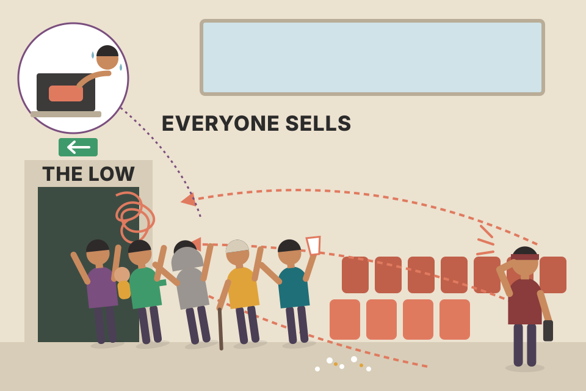
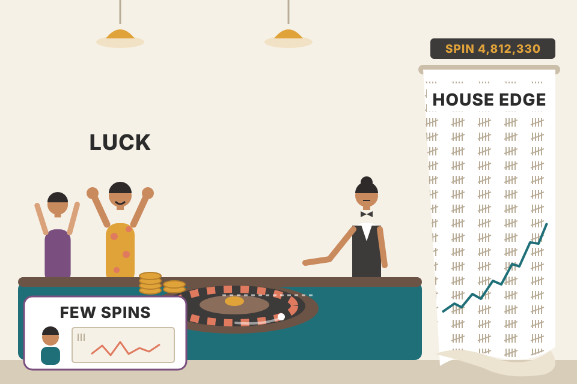
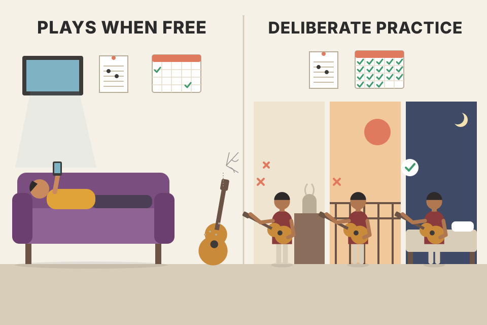
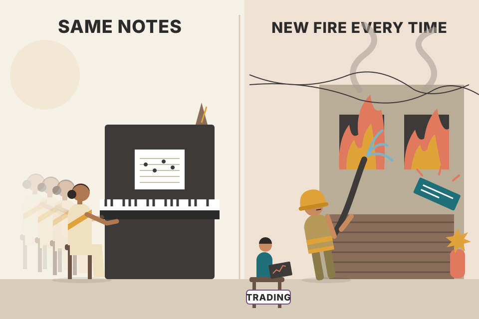

Module 1 has two halves. The workbook half sets up your charts and gives you three habits: telling the story of every bar, keeping charts by hand, and reading around. The reading half is Grimes's essays on what an edge is, why becoming a trader takes years, how learning and practice really work, and why your eye is better at targets and pullbacks than you think. Every chart on this page uses simulated prices built to show one idea. Roll a new market and check which conclusions survive.
The module moves from the screen, to your habits, to you. Each box is one plate below.
Grimes opens with the foundations people skip. First, what it means to have a trading edge and why it matters. He wants both the "how" and the "why": practical work, with enough theory underneath that you know why it works.
Second, the price chart itself. Many traders pick their chart display because it looks nice, because they saw it somewhere, or because a friend (who may not know much) recommended it. They never ask what the chart actually represents.
Third, chart stories, his own term from teaching beginners. You pretend every part of every bar matters and try to explain the role each detail plays in the market's unfolding story. He warns straight away that this is misleading, because it ignores random variation. It's a training tool to build careful chart-reading habits and, later, market feel. It is not a model of how markets work.
Last, the readings cover why learning to trade is so hard. His summary: you don't learn to trade, you become a trader, and the road is long, rewarding and dangerous. Knowing that from day one makes you better equipped.
A music student is told to explain why the composer chose every single note. Some notes really were just filler, but asking the question for each one forces the student to listen. Chart stories are the same drill for your eyes.
One chart is a pure coin-flip random walk (no memory at all). The other has small built-in momentum, or sometimes both are random. Most of the time you can't tell. That is Grimes's warning in one picture: a story you can tell is not proof that the market had one.
Random walks produce trends, double tops, breakouts and "climaxes" by chance. Your brain is a pattern detector, so it finds stories in both charts. The chart-story drill is still worth doing because it trains attention to the details (where the close sits, how wide the bar is, what was a surprise). Later modules then test which details actually carry an edge.
price_physics_basics.md: drift grows with time t, noise with √t, so over a few bars noise wins and stories are mostly noise.Set up your charts now, or if you already trade, rethink your setup. There's no right or wrong, but move toward simplicity and toward the chart itself rather than indicators.
The charts in this module use two tools. You don't have to copy them exactly:
A developing trader should probably use the same setup for every market and timeframe. There can be reasons to differ (a monthly chart versus a 5-minute chart), but the point of these exercises is to train your eye to see data the same way every time. Play with your charting package's options: colours can make charts easier on your eye, and spend extra time with whichever of candles or bars you find less comfortable.
The Keltner channel is a road with lanes as wide as the market's normal daily step, times 2.25. Most days the car stays in the road. Leaving it means "bigger than normal". The 3-10-16 line is a speedometer: above zero, the last 3 days are faster than the last 10.
ATR scales the channel to the market's own volatility, so the same 2.25 means the same thing on a ₹50 stock and a ₹5,000 stock, daily or weekly. That's why one setup can work across markets: it measures in units of "normal movement", not rupees. Switch to weekly bars: the picture looks almost the same, which is the consistency Grimes wants your eye to learn. Turn the indicators off and the chart is still readable; they are aids, not the chart.
backtest_results_summary.md: MACD crossover was not worth trading on any timeframe from 1-minute to weekly. Grimes uses MACD as a chart-reading aid, not as a crossover system, which fits that result.The exercise has five goals: make you slow down and look at chart details; get you thinking about the forces behind price formations; start you thinking about emotion in extreme situations; show you some historic moments in markets (not every chart is historic; some are just interesting patterns); and begin to wake up intuition and inductive learning.
The rules: assume every bar has a story and your job is to tell it. Don't worry about right or wrong; focus on the thinking. There are no wrong answers, the exercise is worth repeating, and finding your own examples extends it. If a chart has text, answer its question. If not, write a separate explanation for every labelled bar. Every labelled bar gets attention and a written explanation.
A good explanation is usually 2–6 sentences and looks at:
It can help to imagine big groups of buyers and sellers pushing the market, and the battle between them.
Write your own 2–6 sentences for a bar first, then press its letter.
The labels are chosen by a script that looks for unusual bars (wide ranges, gaps, outside bars, closes far from where the bar went). The "story" is generated from the same checklist Grimes gives. It's a sparring partner, not an answer key.
| pdf p | Market (dates on the axis) | Labels | What the page asks (paraphrased) |
|---|---|---|---|
| 18 | Gold, continuous contract (Apr–Nov, year not printed) | A–E | No text: a story for each labelled bar. |
| 19 | British pound / US dollar (Dec 2011–Jul 2012) | A–F | No text. |
| 20 | US Dollar Index (Jun 2010–Jan 2011) | A–E | Discuss A as a surprise and its follow-through. D tried to break support: judging by its close, did you expect it to work? |
| 21 | Lorillard Inc (Apr–Nov, year not printed) | A–L | No text. |
| 22 | 10-year US Treasury notes, continuous (Mar–Oct) | A–F | No text. |
| 23 | Coca-Cola (Mar–Oct) | A–F | Hard to read live. Markets sometimes get ahead of themselves and pause: read B, C, D as ranges, the rest as single bars. |
| 24 | Nasdaq Composite (Sep 1999–Apr 2000) | A–J | The dot-com bubble bursting after a long, strong uptrend. Read A as a broad range (a strong trend), the others singly. Any signs of panic? |
| 25 | Euro / Japanese yen (Dec 2010–Jul 2011) | A–I | Read C as a range rather than single bars. |
| 26 | Amazon.com (Dec 2011–Aug 2012) | A–H | No text. |
| 27 | Crude oil, continuous (Feb–Sep) | A–H | No text. |
| 28 | Dow Jones Industrial Average (May 1929–Feb 1930) | A–F | A is Black Thursday, 24 October 1929, the start of the crash that opened the Great Depression. Compare C with E, and D with F. |
| 29 | S&P 500 futures (Mar–Oct 1987) | A–I | The days before the 1987 crash. Was the market weak by the end of the chart? |
| 30 | S&P 500 index (Jun–Dec 1987) | A–G | The 1987 crash, some of the widest-range days ever. Discuss it as surprises and mistakes. |
| 31 | E-mini S&P 500 futures (Aug 2001–Mar 2002) | A–F | Reaction to the 9/11 attacks; the market was closed for several days. Was it strong or weak at A? Read the labelled days as uncertainty. Was the follow-through what you'd expect? |
| 32 | Walt Disney (Nov 2010–Jun 2011) | A–E | How did A and B differ as price pushed through old highs? Stocks gap on news that arrives while closed (often earnings): what did gap E do psychologically? |
| 33 | Corn, continuous (Mar–Oct) | A–G | A and C were two attempts through old highs (old resistance): what was different between A–B and C–F? What was the surprise at G, and what came next? |
| 34 | Silver, continuous (Dec 2010–Jul 2011) | A–I | No text. |
| 35 | Natural gas, continuous (Dec 2011–Jul 2012) | A–I | No text. |
All 18 charts use the setup from section 02: candles, the Keltner channel and the 3-10-16 oscillator underneath. The book prints them rotated on the page. Open the PDF at these pages and do the exercise there; the table only tells you what to look for.
This test is not in the book. It builds markets with no memory at all (each bar's open, wicks and close are independent coin flips) and then finds bars that tell a "bullish story": a wide range with a close near the high. On memoryless data the next bar goes up about half the time. That's Grimes's caveat made visible: on any chart, many bar stories are noise. The drill trains your attention; only testing tells you which stories pay. In real markets some do (Grimes tests them in later modules), but you can't learn which ones from the story alone.
backtest_results_summary.md (VWAP course test): each confluence the course adds (candle pattern, horizontal level) made the setup less bad, but every setup's median Sharpe stayed negative. A bar's story is information, not an edge by itself.There are several ways to do this exercise. The simplest: at the end of each day, write down the closing prices of 3–5 markets you follow. Intraday traders can record prices at fixed times (for example every hour).
One step up: draw price charts by hand. Bar charts aren't hard to keep, and candles can be drawn too. For many traders a swing chart (Kagi chart) or point and figure is even better. On these charts the x-axis is not time. You draw a line up until a reversal signal appears, then move one step to the right and draw a line down, and keep drawing down until the next reversal signal.
Possible reversal signals:
Don't obsess over the exact flipping rule, and don't make it hard to compute. You want to see reversals easily, or have software or a spreadsheet mark them. A few minutes a day is enough, but much of the value comes from actually putting pencil (or pen) to paper.
For the percent rule N is a percent; for fixed points N is in price points (the market starts near 100); for the MA and N-bar rules N is a number of bars (×2, so the slider covers 2–20 bars).
| Same % path, starting price | Swings with "$1 reversal" | Swings with "3 ATR reversal" |
|---|
A swing chart is a staircase drawing of the market where you only add a new stair when the market has clearly turned. Quiet days add nothing. That's why it squeezes weeks of chop into one column and stretches a busy day across several.
Every reversal rule is a filter size. Small filter, many swings, mostly noise. Large filter, few swings, only the big structure. Volatility-scaled filters (ATR, percent) give the same number of swings whatever the price level; a fixed-point filter doesn't. In the table, the $1 rule on the $1 version of the path can never flip (a $1 move is 100% of the price), while on the $500 version ordinary daily noise is several dollars, so it flips almost every few bars. The 3 ATR counts are identical in every row, because ATR scales with price.
tori_trendlines_explained.md: swing points from 5-bar pivots, confirmed 5 candles late. Every swing method trades earliness for reliability.The assigned readings come from Grimes's earlier book, The Art and Science of Technical Analysis: Market Structure, Price Action, and Trading Strategies (Wiley, 2012). They're not essential, but they give deeper perspective on the course's issues. Page numbers are that book's printed pages:
| Pages (2012 book) | Topic | Where it lands on this page |
|---|---|---|
| Preface | — | — |
| 1–8 | having an edge | section 07 |
| 9–12 | basic chart setup | section 02 |
| 22–30 | reading inside bars, charting by hand | sections 03, 04, 15 |
| 375–385 | becoming a trader | sections 06–08 |
| 399–408 | trading primer | — |
| 375–384 | becoming a trader (listed twice in the workbook, with a different end page) | — |
The workbook is the gym; the 2012 book is the textbook you read on the bus. You can train without it, but it explains why the exercises are built the way they are.
books/trading/.Grimes calls himself a quantitative-discretionary trader: his goal is to understand how markets move, how to predict those moves, and where prediction stops. He's often critical of traditional technical analysis and of methods that don't work. This essay is about something else: the journey from beginner to experienced trader, why it's so long, and how to close the gap between knowing and doing.
How markets work. At one level buyers and sellers meet and find a price. A step further, rational participants absorb new information quickly, so prices reflect it fast (the academic idea of market efficiency). But human decisions mix reasoning and emotion; you can manage the emotional part but never remove it. The big realisation is that markets are driven by these behavioural factors.
Paraphrasing a passage from his earlier book: "the market" is the net result of thousands of traders of every size, holding period and intent, each trying to beat the others. Its behaviour adds up their analysis and their emotional reactions. The result is an environment that has evolved to make individual traders make mistakes: to do the wrong thing at the wrong time. It turns our own mental tools and quirks against us. The market isn't against you so much as it sets you against yourself.
Academics and practitioners increasingly accept this. Traders are amazed to watch themselves repeat the same silly mistakes. Behaviour drives prices and prices drive behaviour, so many writers focus on trading psychology. Grimes suggests another angle.
Psychology might not be the answer. The usual advice for nervous entries or impulsive trades is to work on your psychology and visualise success. That can hide the real reasons traders fail:
Unless these are right, no success lasts, and stressing psychology may stress the wrong thing. Many psychologists play down how hard it is to find a method with an edge, as if any method works once you're "aligned". In fact an edge is hard to find. Psychology work may make you calmer while you bleed money. "A happy loser is still a loser."
Seeing the market as a mistake-inducing environment puts the classic psychological problems in their place: biases, emotional decisions, fear and greed are simply part of the market. That urge to sell in despair at what turns out to be the exact bottom, again and again, isn't strange. Those emotions, summed over everyone in the market, are what make the bottom.

A crowded cinema where someone shouts "fire". The urge to run for the door is exactly what blocks the door. Your urge to sell at the low is the same urge everyone else feels, and all of you selling together is the low.
Prices move until the people who want to act have acted. A bottom forms when the last emotional sellers are done, so feeling the strongest urge to sell is close to a sign that selling is nearly exhausted. If your instincts are the average instincts, the market will reliably punish them. That's why Grimes puts method, time and capital ahead of psychology: they're the conditions under which psychology can matter at all.
trader_returns_reality.md: SEBI found 87.7% of Indian F&O traders lost money in FY26, 93% over FY22–24, and 71% of intraday cash traders lost in FY23. Most methods have no edge.breakeven_move_fyers.md: below about ₹20k per trade, flat brokerage and DP charges make delivery trades much more expensive in percent. "Undercapitalised" has a measurable cost.Markets do have patterns: in prices (Grimes's own focus), and in fundamentals, sentiment and more. Any of them can be an edge, which is why there are so many trading styles. Whatever your style, you're hunting these patterns. There are problems.
The edges are slight. In coin terms, a good pattern tells you when the coin is 55/45 instead of 50/50. Many traders look for 80/20, and such edges don't exist on timeframes humans can trade. Patterns exist, but they're small, hard to find, hard to trade, and very hard to trade well. The game is harder than most people say.
Humans handle randomness badly, as many studies show. Pattern recognition, one of our best skills, works against us: the brain happily sees patterns where there are none, and we can't switch that off. With small edges, randomness clouds every result. You don't know whether a loss came from a mistake or from the weighted coin landing against you, and you don't know whether a big win was skill or luck.
So first, act consistently. That's why discipline matters: if you do something different every time you can't even interpret your results. Second, use statistical tools. Studying big winners or even your losers isn't enough; you must see how your edge behaves over a large sample, and keep reminding yourself that this goes against your instincts.
Every line is a trader with exactly the same edge: win +1R or lose −1R. The only difference is luck. This simulation is not in the book; it shows his 55/45 coin in action.

A casino's roulette edge is under 3%, yet a casino can lose to a lucky player any night. It wins because it plays millions of spins and never changes the rules. A 55/45 trader is a small casino, but with far fewer spins, so luck dominates for a long time.
With win chance p and ±1R payoffs, each trade averages 2p − 1 (0.1R at 55%) with a standard deviation near 1R. After N trades the edge grows like N × 0.1 but the luck grows like √N × 1. The edge only beats one standard deviation of luck after about 100 trades and is "95% sure" after about 270. Add a 0.1R cost and the break-even win rate becomes (1 + 0.1) ÷ 2 = 55%: the whole 55/45 edge is gone. Push the slider to 80% to see what traders hope for: almost every line rises. Grimes's point is that this world doesn't exist.
backtest_results_summary.md: break-even win rate p* = (L + c)/(W + L); every losing run had a win rate below its p*. The weekly pullback's ~61% win rate with 2R targets is a real but modest edge, which is what Grimes says to expect.using_equations_to_trade.md: the sizing Monte Carlo on the 51.5% / 2R setup with 0.1R cost, where a few points of win-rate error change everything.price_physics_basics.md: signal grows like t, noise like √t. Same arithmetic, applied to trade counts instead of days.Why traders struggle. Even allowing for small edges, trading is harder than it seems it should be. From his own experience and from guiding, teaching and mentoring hundreds of traders, Grimes names a neglected factor. Many authors rightly say trading isn't really about knowledge: with all its subtlety, the needed knowledge would fit in a small book. Treating trading as a performance discipline is popular, but it doesn't fix everything either. His view: trading is not about knowledge and not about skill. Successful trading is about transformation, making yourself into something you weren't.
His model is Joseph Campbell's work, which sees many human myths as versions of one great story. Its core is the Hero's Journey, found from religion to Greek epics to Disney films. Campbell suggested such stories, even pure fiction, can be truer than factual ones because they say something true about who we are.
The journey: the hero starts in the ordinary world, gets a call to adventure, finds a mentor, crosses into an unknown and mysterious world (often like an underworld, sometimes literally underground), meets many trials, receives help, and returns victorious with a boon: new powers to live in and change the world. The Odyssey, Beowulf, Star Wars and The Lord of the Rings are all this story.
The trader's version. Many traders' histories look like this: a grand call to adventure (who wouldn't want to make a pile of money from their own screen?); finding a mentor (good mentors matter, and few successful traders did it without help); crossing into an "unreal" world (markets are crazy, and looking deeply into them disconnects you from ordinary reality); dire challenges (extreme emotional highs and lows; lying awake at 4am wondering whether you can ever do this, why you tried, how you keep repeating the same mistakes, and what to do tomorrow); failure somehow turning into success; and finally fitting trading into everyday life and finding it wasn't as exotic or hard as it seemed. Grimes adds that we only tell stories about heroes who finish; plenty of dragons ate well for a long time.
So trading isn't about learning patterns, some maths, skill development, or even risk management. All matter, but the real work is work on yourself.
Institutional shortcuts? Big bank prop desks didn't hire traders and wait for a mythical journey, and floor traders didn't study transpersonal psychology. Does the story break? No. Success rates even at prop firms are extremely low, often a fraction of a percent. Hedge funds and old bank prop desks hired traders as apprentices who watched experienced traders for a long time before taking risk, so learning was controlled and structured, and those not suited to managing risk could move to other roles. Some institutional trading is a different job: desks that hedge and lay off derivative risk, or market makers, handle risk differently from a discretionary trader trying to beat the market. Institutions give useful guides and constraints, and a private trader can copy some of them.
Taking the journey. These lessons are mainly for the independent, self-directed trader who makes, and owns, her own decisions (she may work in a team and may trade her own or clients' money; what matters is that she decides). They may also help traders switching styles and institutional traders going solo; Grimes saw many floor traders go through a version of this, and sometimes the dragon won. The lessons:
He ends hopefully: the Hero's Journey parallel opens new avenues for thought, the journey is worth it however long, and even the longest journey starts with one step.
Learning to swim from a book versus being in the water. You can know every stroke by heart and still panic in the deep end. The years in the water, not the book, are what change you.
The journey framing explains a pattern you'd otherwise call irrational: people with the right knowledge still fail. Knowledge is necessary but cheap. What takes years is changing how you react under risk, which is closer to rewiring habits than to learning facts. The apprentice model works because it lets that change happen with small, supervised stakes, and filters out people early. A solo trader has neither the supervision nor the filter, so has to build both: testing, a written process, and a review habit.
backtest_results_summary.md "Next" list (paper trade 3–6 months before going live) is a self-made apprenticeship: small stakes, structured review.Before trading, Grimes was a musician, and found he liked teaching, was good at it, and that teaching sharpened his own thinking (true of teaching trading too). As a music teacher he wondered why some students thrived and others, with the same teaching, didn't. The common thread: the ones who grew were passionate, usually completely obsessed. Without that, results were average at best.
He started music late, at nearly 10, and progressed fast for years. Once obsessed he practised 6–10 hours a day, every day, carried printed music everywhere and rehearsed in his head, ignored teachers in class to study music, slipped into practice rooms at recess, skipped school to practise, read and listened constantly, and rigged his instrument to practise nearly silently late at night. He was not a balanced kid, and he became better than almost anyone at what he did.
He was hooked on the learning process and the flow state; small progress felt like a drug, and failure was a challenge. He was angry when he couldn't play something and turned that anger into effort. He didn't think about failing: with focus and effort he could do almost anything, milestones were clear, and teachers showed him how to break huge challenges into chunks. The harder an obstacle, the more it drew him in until he beat it.
Much later he met a term, first used by Ellen Winner, for this: the rage to master. Such people are obsessed beyond balance or reason with mastering their craft; hard work doesn't feel like work; the process of getting better motivates them as much as the goal. He had an "aha" on a plane reading an early copy of Brett Steenbarger's Enhancing Trader Performance, which used the same term for the master traders Steenbarger worked with.
Not everyone can or should be this obsessed; markets can be a fulfilling lifelong hobby. But if you've committed to mastery, ask: do you have the passion to immerse yourself, beyond balance and reason? Can you hold that intensity for the 3–4 years mastery will probably take, maybe with little positive feedback? If the answer is "no" or "not sure", ask how you could kindle that spark.

Two people learning the guitar. One plays when there's time. The other carries the guitar into every room, practises the hard bar until it's clean, and is annoyed when it isn't. Same teacher, very different players a few years later.
Obsession matters because it changes the kind of hours, not just the number. Someone with the rage to master goes looking for the thing they can't do yet, which is exactly the deliberate practice of section 13. Passion keeps them doing the uncomfortable part for years without outside rewards, which is what trading demands because early results are mostly noise (section 07).
Life needs many skills, most people specialise, and the world keeps changing, so tomorrow's skills differ from today's. The ability to keep learning is the most important skill of all.
Learning as a skill. Two controversies first. Pop-science books and companies made a lot of neuroplasticity (the brain physically rewiring itself). Grimes believes it's real and central to learning, but some companies faced lawsuits and sanctions for exaggerated claims. Second, does a domain skill transfer to other domains? Much research says studying chess doesn't make you smarter or more strategic elsewhere; it makes you good at chess. Many skills are frustratingly domain-specific. What is clear is that learning itself is a skill, probably the most important one: much of what you know goes stale over a lifetime, learning keeps you engaged as you age, and new skills push back your limits.
Developing it. Everyone learns differently; part of learning is finding how you learn best and arranging your work around it (he mentions his podcasts for aural learners). His steps:
Much learning is the skill of discrimination: knowing this thing is like that one and differs from another in these ways. You need exposure to many conditions and data points. Over time your reference set grows, so you classify new experiences faster and see finer distinctions.
This toy is not in the book. Two kinds of simulated situation (dots) sit in overlapping regions with a curved border. The "learner" labels each new situation by the nearest examples it has already seen. With a dozen examples it only knows the rough split; with hundreds it traces the curve and gets the finer cases right. Accuracy climbs fast and then flattens below 100%, because some cases genuinely overlap. That's Grimes's reference set: more varied exposure buys finer distinctions, up to the limit set by the noise in the task.
A wine taster's first month: red or white. After years: this grape, this region, this decade. Same tongue, bigger library of past tastes.
Every New Year: resolutions, gym memberships, diets and big projects, all known to be doomed. We fail so reliably it's a cultural joke, because we don't account for motivation.
Motivation is a resource. With it you can do superhuman things; without it you watch daytime TV on the sofa. It's the fuel for action, and action separates achievers from everyone else. Blaming failure on poor follow-through or quitting is too easy; often not acting is a symptom of failed motivation, not the cause. So look after your finite motivation. Both views matter: a vision of where you're going (important, perhaps essential, but not enough), and loving the small stuff and respecting routine and habit.
Vision. Without a vision of where and how you want to end up, it's hard to get anywhere. A good vision is a beacon in your future that draws you toward it. It doesn't have to be realistic or fully reachable to shape your actions, and it can move as feedback refines your goals. Self-help books love people who set impossible visions and achieved them, but that may be bad advice: imagine someone set on pop stardom despite all evidence, passing up fulfilling, profitable careers and ending with an empty fantasy. Dream big, but the dream isn't the goal. The vision is the magnet, so place it carefully. Wishful thinking won't do it; walking toward the goal in small steps does.
The little things matter. The big picture:
Motivation isn't magic. Work both fronts: a big-picture vision (without it you're lost), and even more, the small tasks that move you closer, turned into habits you come to love. When you love what you do it's easier to keep doing, and doing the right things while loving them gets amazing results.
Motivation is a phone battery. Vision is the reason you carry the phone. Habits are low-power mode: they get things done without draining the battery every time you have to decide.
A habit removes the decision. Each decision ("should I review today's trades?") costs motivation; a routine doesn't. That's why Grimes puts more weight on small tasks than on vision: the vision chooses the direction once, the habits spend almost nothing per day, and the finite resource lasts the years the journey takes.
The "10,000 hour rule" comes from Malcolm Gladwell's bestseller Outliers: it takes 10,000 hours to become expert in anything. Grimes's charge: the number is made up, a catchy fabrication that sells books and distracts from what actually leads to mastery.
The source. Gladwell drew on research on German violinists: the best violinists had far more hours of deliberate practice than those heading to be music teachers (a group with lower admission requirements). The paper is Ericsson, Krampe and Tesch-Römer (1993), The Role of Deliberate Practice in the Acquisition of Expert Performance; Gladwell didn't do the research. Then he found (or created) stories of successful people and backed into the 10,000 figure. Taken literally, the rule implies talent hardly matters or doesn't exist.
What went wrong:
Scientists criticised it heavily, above all Ericsson himself, who said Gladwell didn't understand the research. Others noted mastery can come in far fewer hours, some people never reach it, and fields need very different investments. Gladwell's reply, paraphrased: the rule doesn't apply to sports; practice is not a sufficient condition (he could play chess for 100 years and never be a grandmaster); the point was that natural ability needs a big time investment to show; complex ideas get oversimplified. Grimes: that's exactly what happened.
Why we care. Chasing a mythical 10,000 hours changes behaviour:
Grimes's own arithmetic: 40 hours a week with no vacations reaches 10,000 hours before year 5; a serious hobby at 10 hours a week (2 hours on 5 days, or 6 at the weekend plus a few in the week) takes 20 years; something occasional, never in a lifetime. And plenty of people log far more than 10,000 career hours without anything like mastery: the first clue something is wrong.
What he's seen people do for the number: prop-firm traders, under a Puritan-style work ethic that treats hard work as something that ought to hurt, sitting at the desk from early morning to evening to bank hours; self-taught pianists logging practice toward 10,000; online trader groups urging each other to log their screen time (traders always wrongly believed screen time was the key, and the book made it worse), including a graduate who turned down job offers to spend 3 years logging hours on a simulator; online writers setting projects toward the mythical number. Pop science spreads because it's catchy and memorable, not because it's right.
Counting hours to judge learning is like counting kilometres driven to judge driving skill. A taxi driver with 20 years on the road isn't a racing driver.
An average quoted at one age is a single point from a wide distribution, so turning it into a threshold ("you need 10,000") is a statistics error: half the elite group was below it. Treating hours as the input also invites the cheapest way to raise the number, which is low-effort time. The variable that matters is the kind of practice (section 13), and even that explains only part of the differences between people.
The 10,000-hour debate is the nature/nurture argument: genes and ability are everything, versus training is everything and anyone can do anything. (His shortcut: the truth is usually in the middle.) Research now measures how much practice matters. The 2014 meta-analysis Deliberate Practice and Performance in Music, Games, Sports, Education, and Professions by Macnamara et al. asked whether differences in performance mostly reflect differences in deliberate practice. Their answer, as a share of the variance in performance explained by deliberate practice:
Their conclusion: deliberate practice is important, but not as important as claimed.
Deliberate practice. Some blog readers objected that Gladwell stressed deliberate practice, not mere hours. Grimes: it was Ericsson's original research that stressed it, and Gladwell blurred it. Ericsson's own description (paraphrased): deliberate practice is a specific kind, constantly pushing past your comfort zone, following training designed by an expert to build specific abilities, and using feedback to find and fix weaknesses. Gladwell's Beatles example (about 1,200 Hamburg shows of up to 8 hours, near 10,000 hours) is challenged by Mark Lewisohn's 2013 biography Tune In, which estimates about 1,100 hours. And an hour on stage, trying to give the best show, isn't an hour of focused practice aimed at weaknesses, the kind that explained the Berlin student violinists' abilities.
So deliberate practice is practice that challenges you and pushes your limits. It may not be fun; done right, you fail often, because you're working at the edge of your ability, and that's uncomfortable. Two piano players: one plays pieces he likes, plays for friends, moves on when a piece is decent, and works on hard parts but mostly enjoys playing through. The serious one spends hours on details, works a piece for weeks or months, may go days without playing it whole, and might be unrecognisable to a listener: very slow, or two or three notes repeated many ways. Neither is wrong; they're doing different activities. The serious one may end sessions dejected and start the next by aiming at where he'll fail.
Passion matters. Deliberate practice means meeting your limits and failing over and over. Not fun, but deeply rewarding, and beating obstacles feels sweet. It isn't drudgery, and Grimes doubts you can do it without passion (a word overused, he jokes, by business-school students in job interviews). Passion drives the will to succeed. Unless you love something so much it's part of you, you can't sustain the work; without passion you'll stay a hobbyist.
How to do deliberate practice (a mindset; for someone pursuing mastery, a lifestyle):
Done right it's hard work, very satisfying, and the only way to mastery.
This scatter is simulated, not the paper's data. "Explains 12% of variance" means a correlation of about √0.12 ≈ 0.35. Each dot is a made-up person: practice on the x-axis, performance on the y-axis, with everything else (talent, starting age, teaching quality, luck) as scatter. At 12%, if one person practised one standard deviation more than another, they come out ahead only about 60% of the time. Practice clearly helps, and most of the spread is still something else. At professions (<1%) the cloud has no visible tilt at all.
Practice is the tide raising every boat; talent, coaching and luck are the waves. At 12% you can see the tide, but on any given day the waves decide which boat sits higher.
Research is messier than true/false: answers come with statistical uncertainty, researchers' motives and views shape them, and many solid-looking results fail to replicate. Errors can last decades (his example: low-fat "heart healthy" guidelines now being revised, which he says rested mostly on research funded by sugar producers). Some of the best answers come from meta-studies, studies of studies, where a researcher sees many datasets and methods and can correct for some studies' weaknesses and biases. Still no certainty, but closer.
Brooke Macnamara, Hambrick and Oswald (2014) published such a meta-study of the deliberate practice research, with far less fanfare than the "10,000 rule". Their conclusion, paraphrased: Ericsson and colleagues' (1993) claim that individual differences in performance are largely explained by differences in deliberate practice is not supported by the evidence. Future research should look at basic abilities and other individual differences, weigh them against practice, and study how task factors such as predictability change practice's impact. (The workbook says a chart from the paper follows here; it isn't in this PDF.)
Things that matter. The take-home number: deliberate practice explained 12% of the variation in performance across many fields. Not most, not nearly all, not a lot. Some. Probably important, maybe very, but clearly not the main thing to focus on.
Practice seems to work best in highly predictable fields. Is trading like learning a Beethoven sonata, where nearly everything is known in advance, or like fighting forest fires? Practice failed to explain success in professions (and perhaps education), which doesn't bode well for traders relying on it.
Where each field sits on this line is this page's reading of the meta-analysis numbers, not a chart from the book.
No true "fundamentals". Music has technique and theory. Knifemaking has moving hot metal, managing stresses and controlling hardness. Every sport has techniques drilled into muscle memory. Chess has endgames, tactical pieces and recurring patterns. Trading? People substitute screen time and silly keyboard drills. Grimes argues trading's real fundamentals are psychological skills: performing under risk and pressure. You can work toward them emotionally and intellectually, but a critical factor is time. A beginner is a nervous, twitching mess just thinking about a trade, swinging between elation and depression with every tick, literally unable to think clearly because emotion chemically compromises the brain while the market moves. If he doesn't blow up, after a few years he cares less; he's desensitised, and the emotions fade as he nears mastery. (Grimes notes he wrote "he" throughout, but that women, a tiny share of traders, generally do this better and faster than men in his experience, and more should probably trade.)
Traders need exposure to market patterns, and education: statistics, probability, cognitive bias, market microstructure and efficiency, everything that explains why trading is hard. They also need a lot of exposure to the market and many times at bat.
Discipline fails. We tell traders to be disciplined and they fail. Not because they're stupid or teachers incompetent, but because it's impossible on demand: discipline is an outcome as much as a goal. It shows many things are working and some mastery exists. Telling a beginner to be disciplined is like handing someone a basketball for the first time and telling them to sink 50 free throws in a row.
What might matter most. The 10,000 hours never matched Grimes's experience. In music he was almost immediately "good"; despite a late start he leapfrogged long-time students and loved it, a virtuous circle: seeing skill fed excitement and love (passion), which built more skill. In fields where he reached real mastery he always had an early "aha": early success and immediate attraction. Teaching many students, he saw some improve far more than others regardless of his effort (he worked harder for many mediocre students). Some didn't care; but some put in the time and still didn't improve as much as others. Passion seemed necessary but not sufficient: some weaker students loved music, but without exception every good-to-great student burned with the rage to master, each success just a road to the next challenge.
This is harder in trading: do you love the process of trading, or the money and the (very real) change it could make to your life? You needn't love everything, and may need to resist passion's pull toward obsession, but life rewards coherence. Trading is hard and takes at least a few years for measurable success. If you don't love it, you probably shouldn't do it: perhaps the most important point of all. Life is short.

A pianist rehearsing a sonata gets the same notes every night, so practice converts straight into skill. A firefighter faces a different fire every time; drills help, but much of what makes a good one is calm under danger, which only years of real fires build. Trading is closer to the fire.
Deliberate practice needs fast, clear feedback: you play the bar, you hear the mistake. Trading feedback is slow and noisy (section 07): a correct decision can lose and a bad one can win, so practice can't tell you what to fix trade by trade. What does improve steadily with exposure is emotional regulation, which is why Grimes puts time and desensitisation at the centre, and why discipline appears at the end of the chain, not the start.
Time-consuming and very old-school, but Grimes calls keeping charts by hand the single most useful practice he knows for learning to read charts and staying in the flow of the market.
When he started he had no chart service or software and didn't know what existed. He had a newspaper and graph paper, and every day added one bar to his charts of coffee, sugar, grains, meats and metals futures. He even went through old newspapers in a library to build history. He later got a chart service, but believes those first months laid his foundation.
Years later, struggling while moving to new products and timeframes, he took the advice to keep a five-minute swing chart of the S&P 500 futures by hand. For a year and a half he graphed every move. It demanded total focus and sitting at the desk every minute the market was open. One sheet of graph paper became, with tape and staples, a monster that wrapped around his office walls with a cut-out for the door. (An understanding family helps.) The workbook prints a photo of one of his hand-drawn sheets on pdf p69.
Ways to do it. Skip charts and just write prices at set intervals: a day trader might log 6 active stocks and the S&P 500 every 15 minutes; a longer-term trader, end-of-day prices for major world indexes, bonds, gold and so on. Raw numbers pull you away from charts, which many modern traders depend on too much, and force you to think differently. It may feel uncomfortable; the less you like it, the more you probably need it. Or keep full charts. The method matters less than a consistent rule for defining swings. His intraday rule was a move of a set fraction of intraday ATR: once price came off a high by 3 average bar ranges, he drew a line, then waited for a 3-range bounce off a low to draw the next. Simple bar charts or point and figure work just as well.
Why bother? Electronic charts make life too easy: you scan thousands of bars a day, accept them, look for this week's pattern, and your eyes glaze over. Drawing by hand makes you think about the buying and selling behind each move. Picking up a pencil uses a different part of the brain and makes learning faster and more complete. It makes you pay attention: being at the desk isn't enough, you must be present while trading, and hand charting builds that state and the discipline top trading needs. Not a cure-all, but he believes it taught him to read charts better than anything else, and few people today will tell you to get out the graph paper.
| Price log (every 3rd bar = 15 min) | Time | Price |
|---|
Writing a summary of a lecture by hand versus recording it. The recording holds everything and you remember little; the handwritten notes force you to decide what mattered, and that decision is the learning.
The rule is a state machine with one number of memory: the extreme since the last turn. Each bar you ask one question: has price come back far enough (here 3 × the average bar range) from that extreme? If not, maybe extend the extreme. If yes, the extreme becomes a confirmed swing point, you draw the line, and start watching the other way. Doing this by hand every bar forces you to watch how pullbacks start, stall or extend, which is the chart-reading skill itself.
Grimes poses two quick questions (don't overthink; they aren't tricks). Assume the trade idea is sound; the question is only where you'd place a target.
Try both on simulated versions first.
What your answers say. Grimes bets nearly everyone picks B for both: the middle choice feels right. That points to sophisticated processing behind the scenes. Looking at a chart, you automatically judge volatility from the size of the bars, the swings and the gaps, and get a feel for the size of a typical move in this market. That may feel maddeningly subjective to quants, but subjectivity doesn't make it wrong, and trusting it can deepen your understanding.
On chart 1, A probably looked almost stupidly close, and C, once you saw how much axis you'd need to add, looked "optimistic", to be kind. The time element matters: you're holding for a month. Given enough time C might come, but not in a month. Understanding "not likely" versus "likely" is the root of understanding probability in markets.
Measured move objectives. That's why the measured move works: a quick-and-dirty projection of a reasonable move based on how the market has moved recently. It's imperfect. Tomorrow's volatility may be much higher and blow through your target or stop; it may dry up so price drifts sideways and never gets there; or the trade may fail. But it keeps you aligned with the market's average volatility.
You know a cat can jump onto a table but not onto the roof, without measuring anything. You've seen enough cats. Looking at bars, you've seen how far this market jumps, and your targets come out sized to that.
The simulation is not in the book. It takes the chart's own daily volatility, assumes no drift (no edge), and runs 2,000 one-month futures. A sits a small fraction of a normal month's move away, so it's touched in most simulated months (around 85–90%) and pays almost nothing. B sits about 1.4 monthly standard deviations away: with no drift it's touched in roughly one month in six, more often if your trade idea really has an edge behind it. A stretch, but a plausible one-month target. C needs a move about 19 standard deviations out, which never happens in a month. The typical one-month move scales like daily volatility × √21 (about 4.6 times the daily move). A measured move (the last swing's length added on from the pullback low) is sized by a recent swing, so it automatically speaks the market's own volatility; the readout shows how far, in monthly σ, it lands on this chart, and whether a month is enough to reach it.
trading_equations.md lists ATR, annualised volatility and the Black–Scholes expected move: formal versions of what your eye does here.Look at retracements objectively and something interesting shows. They can end almost anywhere within the previous swing, but on average they give back roughly half of it, often a little more. Grimes hasn't found a more reliable rule in all his years, and quantitative testing backs it.
His test: hundreds of thousands of swings across all major asset classes, measuring each retracement as a percentage of the previous swing (60 means the pullback gave back 60% of the swing before it). His histogram rises from near zero around 10–20%, flattens into a broad plateau from roughly 50% to 95%, and drops at 100%. The peak is around 60% with a very wide margin of error: technically the mean is about 63% with a standard deviation of 21%.
Most people also picked B on quiz 2, mid-swing, and that guess holds real wisdom about how markets move. When he runs this with different groups, beginners included, the answers match. Nobody chose from years of pattern experience or deep knowledge of Treasury futures; they used common sense, projecting the market's swings forward with reasonable assumptions. Good chartreading is a powerful heuristic: quick and sloppy-looking, but at a glance it judges volatility and makes educated guesses about where price may go, the same things sophisticated quantitative models try to do.
How to use this. First, it should reassure you about your own analysis. With ever more computing power in markets, some traders lose faith in the plain human eye (his "Mark 1 Eyeball" joke). Trust it; it does some things very well. Second, respect the limits of your tools. A calculated retracement ratio has no magic: buying at exactly 61.8034% of the last swing is a bit silly when the data says anywhere from ~40% to ~80% is about equally likely. If you set a stop or target precisely at such a level, be ready to adapt to other information.
The irony: common Fibonacci ratios probably do put you in the right ballpark, as do pivot points and other levels, simply because they draw lines inside the reasonable range of market movement. You could do the same without them. For many traders, dropping these levels is an important step toward trusting their own analysis. As long as your tools respect the market's volatility and typical swings, they're powerful for managing risk and trades.
A ball rolling down a valley side and back up the other slope. It usually comes back somewhere around the middle of the climb, but you can't say "exactly 61.8% of the way". Draw a wide band, not a line.
Run the random walk. A market with no memory at all produces a histogram with a mean around 57–63% and an SD around 22%, very like Grimes's real-market numbers. Part of the shape comes from the measuring rule: a pullback must be at least one swing threshold deep to count, and anything past 100% is a new swing, so the histogram is squeezed into a band and its middle lands near 60%. So the histogram alone can't prove markets have memory. Switch to "momentum" and pullbacks get a few points shallower on average; "mean-reverting" makes them a few points deeper. So the method does pick up memory when it's there, but only weakly, and Grimes's practical claims (no magic ratio, ~40–80% equally likely, place orders mid-swing, keep stops flexible) hold either way.
vwap_volume_profile_explained.md: the Currency Pros setup enters with limit orders at the 67% or 75% Fibonacci retracement. Both sit inside Grimes's 40–80% band where pullbacks are roughly equally likely, so the exact ratio is unlikely to be the edge.It assumes every bar matters, which ignores random variation. It's a training tool for attention and chart-reading habits, not a model of the market (sections 01, 03).
Keltner channel at 2.25 ATR around a 20-period EMA; a MACD built on simple averages with 3-10-16 inputs and no histogram. The ATR length isn't stated (section 02).
To train the eye to see data the same way every time. Volatility-scaled tools like ATR channels make that possible because they measure in units of normal movement (section 02).
On the ₹4,000 stock ₹10 is ordinary noise, so it flips constantly; on the ₹40 stock it's 25% and rarely flips. Use a percent or ATR-based reversal (section 04).
No method with an edge; not prepared for a 3–5 year learning curve; undercapitalised (section 06).
About 100 trades (edge 0.1N vs luck ≈√N). A 0.1R cost raises break-even to 55%, erasing the edge (section 07).
They don't really: prop success rates are a fraction of a percent. They use apprenticeships (watching before taking risk), structure, redeployment of those not suited to risk, and some desks (hedging, market making) do a different job (section 08).
It's the elite group's average at age 20 (another age gives another number), and half the violinists hadn't reached it. Also hours ≠ deliberate practice; the Beatles' figure was ~1,100 hours by Lewisohn's count (sections 12–13).
It explains most in predictable fields (games 26%, music 21%) and least in professions (<1%). Trading is unpredictable with noisy feedback; its "fundamentals" are psychological skills built mostly by time and exposure (sections 13–14).
Discipline is an outcome of the right framework, emotional skills (years of desensitisation) and process, not something you can switch on (section 14).
Its distance relative to the market's normal movement over that time (roughly daily volatility × √days). Too close is trivially hit; many standard deviations away is "not likely" in a month. Measured moves give a quick estimate (section 16).
Mean ≈ 63%, SD ≈ 21%, peak near 60%; anywhere ~40–80% is about equally likely, so a precise Fibonacci level has no magic. Use a zone and stay flexible (section 17).
No. It means the histogram alone can't prove market memory; the advice (no magic ratio, mid-swing entries, flexible stops) is about where pullbacks typically end, which holds either way (section 17, beyond the book).